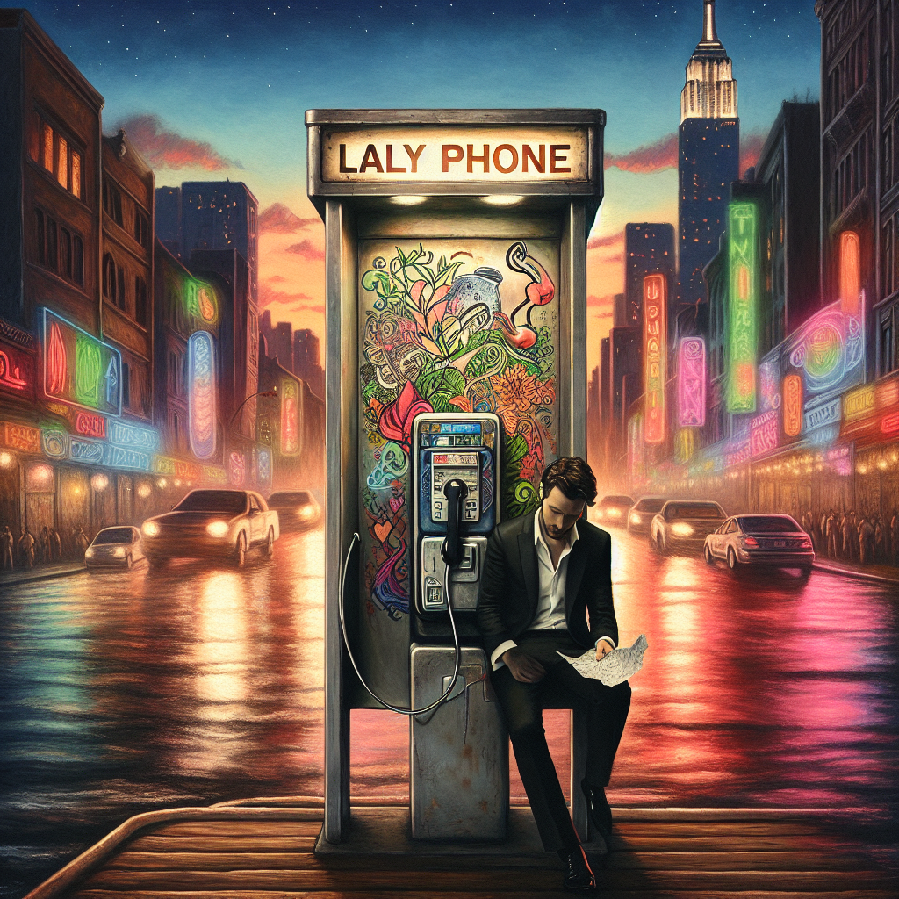
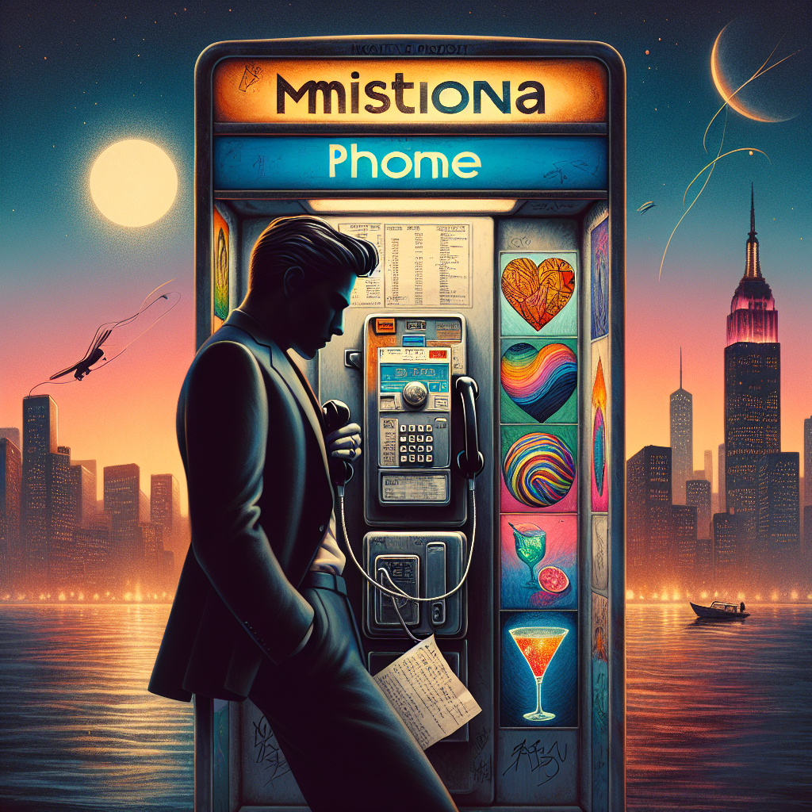

model = "gpt-4"
system_role = "You are a knowledgeable professional in the music industry to Latin sensation Prince Royce"
'''
In the past 8 years, multi-platinum award-winning, singer/songwriter Prince Royce has become a bona fide Latin superstar,
scoring 17 #1 radio hits and winning more than 80 awards and recognitions including: 22 Latin Billboard Awards, 19 Premio lo Nuestro Awards,
19 Premios Juventud Awards, 6 Latin AMAs, and 12 Latin GRAMMY nominations. Royce has a massive fan base with over 55 million followers on social media
and he has sold out many of the most prestigious venues in Latin America and the United States. In February 2019 Prince Royce made history becoming the
first and only tropical music artist to perform at the Houston Rodeo at the NRG Stadium where he attracted more than 55,000 euphoric fans.
All of his albums have been certified multiplatinum. His latest album, FIVE, was released in February 2017 and is Royce’s fifth career album.
The record debuted at #1 on Billboard's Latin Albums chart and earned Royce the highest first-week sales of any Latin album in the two years prior to the release.
The album has been certified Triple Platinum by the RIAA in the United States and has garnered multiple international certifications.
FIVE, made the Top Latin Albums list at Billboard’s coveted end of the year issue and Billboard also named Royce one of the Top Latin Artists of 2017.
Some of his collaborations include: Shakira, Chris Brown, Jennifer Lopez, Selena Gomez, Snoop Dogg, Pitbull, Thalia, Maná, Daddy Yankee, Becky G, Anitta, Ludacris, J Balvin, Bad Bunny, Farruko, and Maluma, among others.
Prince Royce has also started to pursue an acting career; he co-starred as Peter in the Fox Live musical broadcast of “The Passion” in 2016 and was part of the cast of Hulu’s hit series, “East Los High”.
August 9, 2018 was proclaimed "Prince Royce Day" in New York by Mayor Bill de Blasio, in recognition of his contributions to society and for being a role model to youth in his home town.
He has been induced into the Bronx Hall of Fame with a street named after him, and ran the New York City Marathon to raise funds and awareness on education in public schools and kidney disease.
'''
initial_prompt = '''
Prince Royce is about to drop a new album in February 2024. The album name is "Llamada Perdida" and tracklist includes:
1. La Corriente
2. No Te Vayas
3. Sufro
4. Te Espero
5. Llamada Perdida
6. Champaña
7. Boogie Chata
8. Borrador
9. Los Lambones
10. Anestesiada
11. Cosas de la Peda
12. Si Ya No Volveras
13. Morfina
14. Como Salimos de Este Lío?
15. La Vida Te Hace Fuerte
16. Si Te Preguntan...
17. Matar El Sentimiento
18. Frío en El Infierno
19. Un Papel
20. Me Enrd
21. Otra Vez
22. Le Doy Mil
23. Lao' a Lao'
and a short album description includes:
"Fans can expect to hear Prince Royce's signature sound while also experiencing a new and elevated level of artistry on "Llamada Perdida”.
The album is a testament to Royce's growth as an artist, with more mature lyrics and a more self-confident sound.
The songs are strewn together via voicemail messages, serving as interludes to certain tracks."
Create a dall-e-3 description of an album cover that will best fit the descriptions of this new album and its songs.
'''
messages = [
{"role": "system", "content": system_role} ,
{"role": "user", "content": initial_prompt}]Can gpt-4 and dall-e-3 Predict Prince Royce’s New Album Cover?
Singer sensation Prince Royce was at his peak in the 2010’s with his contemporary bachata drops. Prince Royce is dropping a new album February 16, 2024 and has been extremely teased to his fans. Given the sneak peaks of his new album (tracklist + album description), can AI predict the album cover? And once the album comes out, how accurate will the prediction have been?
1. gpt-4: “Create a dall-e-3 image description for the new Prince Royce Album Cover”
2. dall-e-3: * insert gpt-4 description *
gpt-4 Setup
To set up the model, I…
Gave the system a short bio straight from the Prince Royce website
I then also fed it the revealed tracklist and a short album description
The model setup looked like this:
gpt-4 Result
Prompt:
[Given the information] Create a dall-e-3 description of an album cover that will best fit the descriptions of this new album and its songs.
Response:
The album cover for “Llamada Perdida” is a beautifully intricate and symbolic representation of Prince Royce’s journey as an artist. The main image is a vintage, rusted payphone located in the middle of a vibrant, bustling cityscape at dusk, evoking the theme of lost calls and missed connections. The payphone is adorned with colorful graffiti, each marking a symbol of a song on the album - a champagne glass for “Champaña”, an intricately sketched heart for “Matar El Sentimiento”, a crumpled paper for “Un Papel”, a wave for “La Corriente”, and so on. Prince Royce himself is depicted in the foreground, leaning against the payphone, dressed in a sleek black suit, his gaze focused on a crumpled piece of paper in his hand – perhaps a lost number, or the lyrics to his next song. His expression is one of contemplation and determination, reflecting the maturity of his lyrics and his self-confidence as an artist. His silhouette against the setting sun creates a striking contrast, symbolizing the end of one chapter and the beginning of another. The album title, “Llamada Perdida”, is written in bold, white letters at the top of the cover, standing out against the deep, twilight blue of the cityscape. The font is modern and edgy, adding to the contemporary feel of the cover. In contrast, Prince Royce’s name is displayed in a classic, elegant script at the bottom, a nod to his enduring presence in the Latin music scene. The overall aesthetic is a perfect blend of the old and the new, just like the music on the album itself.
dall-e-3 Setup
I then inserted this description into a dall-e-3 model to generate the image.
from openai import OpenAI
client = OpenAI()
response = client.images.generate(
model="dall-e-3",
prompt=
'''
The album cover for "Llamada Perdida" is a beautifully intricate and symbolic representation of Prince Royce's journey as an artist.
The main image is a vintage, rusted payphone located in the middle of a vibrant, bustling cityscape at dusk, evoking the theme of lost calls and missed connections.
The payphone is adorned with colorful graffiti, each marking a symbol of a song on the album - a champagne glass for "Champaña", an intricately sketched heart for "Matar El Sentimiento",
a crumpled paper for "Un Papel", a wave for "La Corriente", and so on. Prince Royce himself is depicted in the foreground, leaning against the payphone,
dressed in a sleek black suit, his gaze focused on a crumpled piece of paper in his hand – perhaps a lost number, or the lyrics to his next song.
His expression is one of contemplation and determination, reflecting the maturity of his lyrics and his self-confidence as an artist.
His silhouette against the setting sun creates a striking contrast, symbolizing the end of one chapter and the beginning of another. The album title, "Llamada Perdida",
is written in bold, white letters at the top of the cover, standing out against the deep, twilight blue of the cityscape. The font is modern and edgy,
adding to the contemporary feel of the cover. In contrast, Prince Royce's name is displayed in a classic, elegant script at the bottom,
a nod to his enduring presence in the Latin music scene. The overall aesthetic is a perfect blend of the old and the new, just like the music on the album itself.
''',
size="1024x1024",
quality="standard",
n=1,
)
image_url = response.data[0].urldall-e-3 Results
This prompt generated these three album covers:

Regenerating the image with the same prompt resulted in this second image:
A third image with the same prompt:
